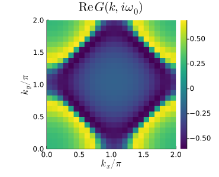
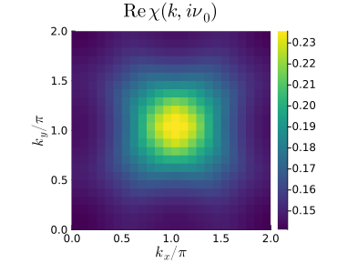
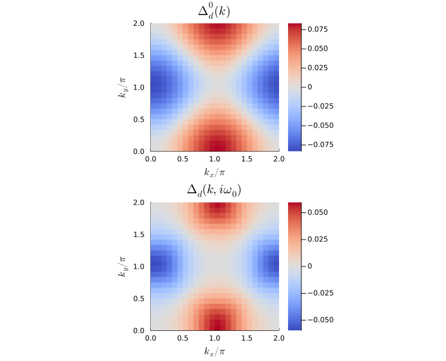
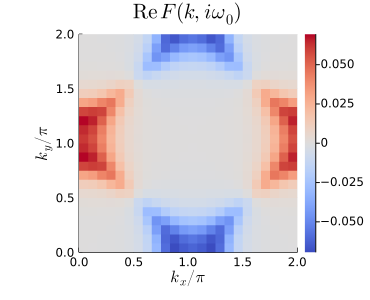
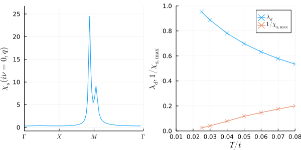

FLEX approximation
Contents
FLEX approximation#
Author: Kosuke Nogaki
Theory of FLEX in the paramagnetic state#
Code implementation#
using Plots
gr()
using LaTeXStrings
using FFTW
using LinearAlgebra
using Roots
using SparseIR
import SparseIR: Statistics, value, valueim
# Check if a given function called with given types is type stable
function typestable(@nospecialize(f), @nospecialize(t))
v = code_typed(f, t)
stable = true
for vi in v
for (name, ty) in zip(vi[1].slotnames, vi[1].slottypes)
!(ty isa Type) && continue
if ty === Any
stable = false
println("Type instability is detected! the variable is $(name) ::$ty")
end
end
end
return stable
end
typestable (generic function with 1 method)
Parameter setting#
### System parameters
t = 1 # hopping amplitude
W = 8*t # bandwidth
wmax = 10 # set wmax >= W
T = 0.1 # temperature
beta = 1/T # inverse temperature
n = 0.85 # electron filling, here per spin per lattice site (n=1: half filling)
U = 4.0 # Hubbard interaction
### Numerical parameters
nk1, nk2 = 24, 24 # number of k_points along one repiprocal crystal lattice direction k1 = kx, k2 = ky
nk = nk1*nk2
IR_tol = 1e-10 # accuary for l-cutoff of IR basis functions
sfc_tol = 1e-4 # accuracy for self-consistent iteration
maxiter = 30 # maximal number of iterations in self-consistent cycle
mix = 0.2 # mixing parameter for new
U_maxiter = 50 # maximal number of iteration steps in U renormalization loop
;
Generating meshes#
"""
Holding struct for k-mesh and sparsely sampled imaginary time 'tau' / Matsubara frequency 'iw_n' grids.
Additionally we defines the Fourier transform routines 'r <-> k' and 'tau <-> l <-> wn'.
"""
struct Mesh
nk1 ::Int64
nk2 ::Int64
nk ::Int64
ek ::Array{Float64,2}
iw0_f ::Int64
iw0_b ::Int64
fnw ::Int64
fntau ::Int64
bnw ::Int64
bntau ::Int64
IR_basis_set::FiniteTempBasisSet
end
"""Initiarize function"""
function Mesh(
nk1 ::Int64,
nk2 ::Int64,
IR_basis_set::FiniteTempBasisSet,
)::Mesh
nk::Int64 = nk1*nk2
# Compute Hamiltonian
ek = Array{ComplexF64,2}(undef, nk1, nk2)
for iy in 1:nk2, ix in 1:nk1
kx::Float64 = (2*π*(ix-1))/nk1
ky::Float64 = (2*π*(iy-1))/nk2
ek[ix, iy] = -2.0*(cos(kx)+cos(ky))
end
# lowest Matsubara frequency index
iw0_f = findall(x->x==FermionicFreq(1), IR_basis_set.smpl_wn_f.sampling_points)[1]
iw0_b = findall(x->x==BosonicFreq(0), IR_basis_set.smpl_wn_b.sampling_points)[1]
# the number of sampling point for fermion and boson
fnw = length(IR_basis_set.smpl_wn_f.sampling_points)
fntau = length(IR_basis_set.smpl_tau_f.sampling_points)
bnw = length(IR_basis_set.smpl_wn_b.sampling_points)
bntau = length(IR_basis_set.smpl_tau_b.sampling_points)
# Return
Mesh(nk1, nk2, nk, ek, iw0_f, iw0_b, fnw, fntau, bnw, bntau, IR_basis_set)
end
function smpl_obj(mesh::Mesh, statistics::SparseIR.Statistics)
""" Return sampling object for given statistic """
if statistics == Fermionic()
smpl_tau = mesh.IR_basis_set.smpl_tau_f
smpl_wn = mesh.IR_basis_set.smpl_wn_f
elseif statistics == Bosonic()
smpl_tau = mesh.IR_basis_set.smpl_tau_b
smpl_wn = mesh.IR_basis_set.smpl_wn_b
end
return smpl_tau, smpl_wn
end
"""Fourier transformation"""
function tau_to_wn(mesh::Mesh, statistics, obj_tau) where {T <: SparseIR.Statistics}
""" Fourier transform from tau to iw_n via IR basis """
smpl_tau, smpl_wn = smpl_obj(mesh, statistics)
obj_l = fit(smpl_tau, obj_tau, dim=1)
obj_wn = evaluate(smpl_wn, obj_l, dim=1)
return obj_wn
end
function wn_to_tau(mesh::Mesh, statistics::Statistics, obj_wn)
""" Fourier transform from iw_n to tau via IR basis """
smpl_tau, smpl_wn = smpl_obj(mesh, statistics)
obj_l = fit(smpl_wn, obj_wn, dim=1)
obj_tau = evaluate(smpl_tau, obj_l, dim=1)
return obj_tau
end
function k_to_r(mesh::Mesh, obj_k)
""" Fourier transform from k-space to real space """
obj_r = fft(obj_k,[2,3])
return obj_r
end
function r_to_k(mesh::Mesh, obj_r)
""" Fourier transform from real space to k-space """
obj_k = ifft(obj_r,[2,3])/mesh.nk
return obj_k
end
@assert typestable(tau_to_wn, (Mesh, SparseIR.Statistics, Array{ComplexF64,4}))
@assert typestable(wn_to_tau, (Mesh, SparseIR.Statistics, Array{ComplexF64,4}))
FLEX loop solver#
"""
Solver struct to calculate the FLEX loop self-consistently.
After initializing the Solver by `solver = FLEXSolver(mesh, beta, U, n, sigma_init, sfc_tol, maxiter, U_maxiter, mix)'
it can be run by `solve(solver)`.
"""
mutable struct FLEXSolver
mesh ::Mesh
beta ::Float64
U ::Float64
n ::Float64
sfc_tol ::Float64
maxiter ::Int64
U_maxiter::Int64
mix ::Float64
verbose ::Bool
mu ::Float64
gkio ::Array{ComplexF64,3}
grit ::Array{ComplexF64,3}
ckio ::Array{ComplexF64,3}
V ::Array{ComplexF64,3}
sigma ::Array{ComplexF64,3}
end
"""Initiarize function"""
function FLEXSolver(
mesh ::Mesh,
beta ::Float64,
U ::Float64,
n ::Float64,
sigma_init::Array{ComplexF64,3};
sfc_tol ::Float64=1e-4,
maxiter ::Int64 =100,
U_maxiter ::Int64 =10,
mix ::Float64=0.2,
verbose ::Bool =true
)::FLEXSolver
mu::Float64 = 0.0
gkio = Array{ComplexF64}(undef, mesh.fnw, mesh.nk1, mesh.nk2)
grit = Array{ComplexF64}(undef, mesh.fntau, mesh.nk1, mesh.nk2)
ckio = Array{ComplexF64}(undef, mesh.bnw, mesh.nk1, mesh.nk2)
V = Array{ComplexF64}(undef, mesh.bntau, mesh.nk1, mesh.nk2)
sigma = sigma_init
solver = FLEXSolver(mesh, beta, U, n, sfc_tol, maxiter, U_maxiter, mix, verbose, mu, gkio, grit, ckio, V, sigma)
solver.mu = mu_calc(solver)
gkio_calc(solver,solver.mu)
grit_calc(solver)
ckio_calc(solver)
return solver
end
#%%%%%%%%%%% Loop solving instance
function solve(solver::FLEXSolver)
""" FLEXSolver.solve() executes FLEX loop until convergence """
# check whether U < U_crit! Otherwise, U needs to be renormalized.
if maximum(abs, solver.ckio) * solver.U >= 1
U_renormalization(solver)
end
# perform loop until convergence is reached:
for it in 1:solver.maxiter
sigma_old = copy(solver.sigma)
loop(solver)
# check whether solution is converged.
sfc_check = sum(abs.(solver.sigma-sigma_old))/sum(abs.(solver.sigma))
if solver.verbose
println(it, '\t', sfc_check)
end
if sfc_check < solver.sfc_tol
println("FLEX loop converged at desired accuracy")
break
end
end
end
function loop(solver::FLEXSolver)
""" FLEX loop """
gkio_old = copy(solver.gkio)
V_calc(solver)
sigma_calc(solver)
solver.mu = mu_calc(solver)
gkio_calc(solver,solver.mu)
solver.gkio .= solver.mix*solver.gkio .+ (1-solver.mix)*gkio_old
grit_calc(solver)
ckio_calc(solver)
end
#%%%%%%%%%%% U renormalization loop instance
function U_renormalization(solver::FLEXSolver)
""" Loop for renormalizing U if Stoner enhancement U*max{chi0} >= 1. """
println("WARNING: U is too large and the spin susceptibility denominator will diverge/turn unphysical!")
println("Initiate U renormalization loop.")
# save old U for later
U_old::Float64 = solver.U
# renormalization loop may run infinitely! Insert break condition after U_it_max steps
U_it::Int64 = 0
while U_old*maximum(abs, solver.ckio) >= 1.0
U_it += 1
# remormalize U such that U*chi0 < 1
solver.U = solver.U / (maximum(abs, solver.ckio)*solver.U + 0.01)
println(U_it, '\t', solver.U, '\t', U_old)
# perform one shot FLEX loop
loop(solver)
# reset U
solver.U = U_old
# break condition for too many steps
if U_it == solver.U_maxiter
println("U renormalization reached breaking point")
break
end
end
println("Leaving U renormalization...")
end
#%%%%%%%%%%% Calculation steps
function gkio_calc(solver::FLEXSolver, mu::Float64)
""" calculate Green function G(iw,k) """
for iy in 1:solver.mesh.nk2, ix in 1:solver.mesh.nk1, iw in 1:solver.mesh.fnw
#iv::ComplexF64 = (im * π/solver.beta) * solver.mesh.IR_basis_set.smpl_wn_f.sampling_points[iw]
iv::ComplexF64 = valueim(solver.mesh.IR_basis_set.smpl_wn_f.sampling_points[iw], solver.beta)
solver.gkio[iw,ix,iy] = 1.0/(iv - solver.mesh.ek[ix, iy] + mu - solver.sigma[iw,ix,iy])
end
end
function grit_calc(solver::FLEXSolver)
""" Calculate real space Green function G(tau,r) [for calculating chi0 and sigma] """
# Fourier transform
grio = k_to_r(solver.mesh, solver.gkio)
solver.grit .= wn_to_tau(solver.mesh, Fermionic(), grio)
end
function ckio_calc(solver::FLEXSolver)
""" Calculate irreducible susciptibility chi0(iv,q) """
crit = Array{ComplexF64}(undef, solver.mesh.bntau, solver.mesh.nk1, solver.mesh.nk2)
for iy in 1:solver.mesh.nk2, ix in 1:solver.mesh.nk1, it in 1:solver.mesh.bntau
crit[it,ix,iy] = solver.grit[it,ix,iy] * solver.grit[solver.mesh.bntau-it+1,ix,iy]
end
# Fourier transform
ckit = r_to_k(solver.mesh, crit)
solver.ckio .= tau_to_wn(solver.mesh, Bosonic(), ckit)
end
function V_calc(solver::FLEXSolver)
""" Calculate interaction V(tau,r) from RPA-like spin and charge susceptibility for calculating sigma """
# check whether U is too large and give warning
if maximum(abs.(solver.ckio))*solver.U >= 1
error("U*max(chi0) >= 1! Paramagnetic phase is left and calculations will turn unstable!")
end
# spin and charge susceptibility
chi_spin = solver.ckio ./ (1 .- solver.U .* solver.ckio)
chi_charge = solver.ckio ./ (1 .+ solver.U .* solver.ckio)
Vkio = (1.5*solver.U^2) .* chi_spin .+ (0.5*solver.U^2) .* chi_charge .- (solver.U^2) .* solver.ckio
# Constant Hartree Term V ~ U needs to be treated extra, since they cannot be modeled by the IR basis.
# In the single-band case, the Hartree term can be absorbed into the chemical potential.
# Fourier transform
Vrio = k_to_r(solver.mesh, Vkio)
solver.V .= wn_to_tau(solver.mesh, Bosonic(), Vrio)
end
function sigma_calc(solver::FLEXSolver)
""" Calculate self-energy Sigma(iw,k) """
sigmarit = solver.V .* solver.grit
# Fourier transform
sigmakit = r_to_k(solver.mesh, sigmarit)
solver.sigma .= tau_to_wn(solver.mesh, Fermionic(), sigmakit)
end
#%%%%%%%%%%% Setting chemical potential mu
function calc_electron_density(solver::FLEXSolver,mu::Float64)::Float64
""" Calculate electron density from Green function """
gkio_calc(solver,mu)
gio = dropdims(sum(solver.gkio,dims=(2,3)),dims=(2,3))/solver.mesh.nk
g_l = fit(solver.mesh.IR_basis_set.smpl_wn_f,gio, dim=1)
g_tau0 = dot(solver.mesh.IR_basis_set.basis_f.u(0), g_l)
n = 1.0 + real(g_tau0)
n = 2.0 * n #for spin
end
function mu_calc(solver::FLEXSolver)::Float64
""" Find chemical potential for a given filling n0 via brent's root finding algorithm """
f = x -> calc_electron_density(solver,x) - solver.n
mu = find_zero(f, (3*minimum(solver.mesh.ek), 3*maximum(solver.mesh.ek)), Roots.Brent())
end
@assert typestable(U_renormalization, FLEXSolver)
@assert typestable(solve, FLEXSolver)
Execute FLEX loop#
# initialize calculation
IR_basis_set = FiniteTempBasisSet(beta, Float64(wmax), IR_tol)
mesh = Mesh(nk1, nk2, IR_basis_set)
sigma_init = zeros(ComplexF64,(mesh.fnw, nk1, nk2))
solver = FLEXSolver(mesh, beta, U, n, sigma_init, sfc_tol=sfc_tol, maxiter=maxiter, U_maxiter=U_maxiter, mix=mix)
# perform FLEX loop
solve(solver)
WARNING: U is too large and the spin susceptibility denominator will diverge/turn unphysical!
Initiate U renormalization loop.
1 2.3679802691718734 4.0
2 2.6631530509593295 4.0
3 2.952843201137596 4.0
4 3.237266502742386 4.0
5 3.5175353553180475 4.0
6 3.795074730529691 4.0
Leaving U renormalization...
1 0.08848089073847332
2 0.1456952273459936
3 0.02261581413125772
4 0.011893505710472181
5 0.007627709050173954
6 0.005337914476432903
7 0.003893254237016371
8 0.0028971360061488564
9 0.002176317020927079
10 0.001642154658978858
11 0.0012421091833960164
12 0.0009414202269479329
13 0.0007150642109606235
14 0.0005445167053352402
15 0.00041593780933783537
16 0.0003188981704705473
17 0.00024554695819710805
18 0.0001899484647509771
19 0.0001476827551312127
20 0.00011544934333125694
21 9.075049525080957e-5
FLEX loop converged at desired accuracy
Visualize results#
# plot 2D k-dependence of lowest Matsubara frequency of e.g. green function
myx = (2 .* collect(1:nk1) .- 1) ./ nk1
myy = (2 .* collect(1:nk1) .- 1) ./ nk2
heatmap(myx, myy, real.(solver.gkio[solver.mesh.iw0_f,:,:]),
title=latexstring("\\mathrm{Re}\\,G(k,i\\omega_0)"), xlabel=latexstring("k_x/\\pi"), ylabel=latexstring("k_y/\\pi"),
c=:viridis,
xlim = (0,2), ylim = (0,2), aspect_ratio=1.0, size=(370,300))

# plot 2D k-dependence of lowest Matsubara frequency of e.g. chi0
heatmap(myx, myy, real.(solver.ckio[solver.mesh.iw0_b,:,:]),
title=latexstring("\\mathrm{Re}\\,\\chi(k,i\\nu_0)"), xlabel=latexstring("k_x/\\pi"), ylabel=latexstring("k_y/\\pi"),
c=:viridis,
xlim = (0,2), ylim = (0,2), aspect_ratio=1.0, size=(370,300))

Linearized Eliashberg equation#
Code implementation#
Linearized Eliashberg solver#
"""
Solver struct for solving the linearized gap equation using the power method.
It takes FLEX results as an input.
"""
mutable struct LinearizedGapSolver
mesh ::Mesh
gkio ::Array{ComplexF64,3}
V_singlet ::Array{ComplexF64,3}
delta ::Array{ComplexF64,3}
frit ::Array{ComplexF64,3}
U ::Float64
maxiter ::Int64
sfc_tol ::Float64
verbose ::Bool
lam ::Float64
end
function LinearizedGapSolver(
FLEX_solver::FLEXSolver;
maxiter ::Int64 =50,
sfc_tol ::Float64=1e-4,
verbose ::Bool =true
)::LinearizedGapSolver
## Initialize necessary quantities from FLEX loop
mesh = FLEX_solver.mesh
gkio = FLEX_solver.gkio
U = FLEX_solver.U
maxiter = maxiter
sfc_tol = sfc_tol
verbose = verbose
## Initialize trial gap function
# Here we focus on a d-wave symmetric solution
delta = Array{ComplexF64}(undef, FLEX_solver.mesh.fnw, FLEX_solver.mesh.nk1, FLEX_solver.mesh.nk2)
frit = Array{ComplexF64}(undef, FLEX_solver.mesh.fntau, FLEX_solver.mesh.nk1, FLEX_solver.mesh.nk2)
for iy in 1:FLEX_solver.mesh.nk2, ix in 1:FLEX_solver.mesh.nk1, iw in 1:FLEX_solver.mesh.fnw
kx::Float64 = (2*π*(ix-1))/FLEX_solver.mesh.nk1
ky::Float64 = (2*π*(iy-1))/FLEX_solver.mesh.nk2
delta[iw,ix,iy] = cos(kx) - cos(ky)
end
#normalize initial guess
normalize!(delta)
# Initialize interaction
V_singlet = V_singlet_calc(FLEX_solver)
## Initialize eigenvalue
lam::Float64 = 0.0
gap_solver = LinearizedGapSolver(mesh, gkio, V_singlet, delta, frit, U, maxiter, sfc_tol, verbose, lam)
end
function solve(gap_solver::LinearizedGapSolver)
""" Solving instance to find eigenvalue from power method """
for it in 1:gap_solver.maxiter
lam_old = gap_solver.lam
delta_old = copy(gap_solver.delta)
frit_calc(gap_solver)
deltarit = gap_solver.V_singlet .* gap_solver.frit
# Fourier transform to momentum space
deltakit = r_to_k(gap_solver.mesh, deltarit)
gap_solver.delta .= tau_to_wn(gap_solver.mesh, Fermionic(), deltakit)
# calculate eigenvalue
gap_solver.lam = sum(real.(conj.(gap_solver.delta).* delta_old))
normalize!(gap_solver.delta)
if gap_solver.verbose
println(it, '\t', gap_solver.lam, '\t', abs(gap_solver.lam-lam_old))
end
if abs(gap_solver.lam-lam_old) < gap_solver.sfc_tol
break
end
end
end
#%%%%%%%%%%% Calculation steps
function V_singlet_calc(solver::FLEXSolver)::Array{ComplexF64,3}
""" Set up interaction in real space and imaginary time """
chi_spin = solver.ckio ./ (1 .- solver.U*solver.ckio)
chi_charge = solver.ckio ./ (1 .+ solver.U*solver.ckio)
Vkio = 1.5*solver.U^2 * chi_spin .- 0.5*solver.U^2 * chi_charge
# Constant Hartree Term V ~ U needs to be treated extra, since they cannot be modeled by the IR basis.
# In the special case of d-wave symmetry, it can be neglected.
# Fourier transform
Vrio = k_to_r(solver.mesh, Vkio)
V_singlet = wn_to_tau(solver.mesh, Bosonic(), Vrio)
return V_singlet
end
function frit_calc(gap_solver::LinearizedGapSolver)
""" Calculate (linearized) anomalous Green function F = |G|^2 * delta for evaluating the gap equation """
fkio = - gap_solver.gkio.*conj(gap_solver.gkio).*gap_solver.delta
# Fourier transform
frit = k_to_r(gap_solver.mesh, fkio)
gap_solver.frit = wn_to_tau(gap_solver.mesh, Fermionic(), frit)
end
frit_calc (generic function with 1 method)
Executing the gap equation solver#
gap_solver = LinearizedGapSolver(solver, maxiter=maxiter, sfc_tol=sfc_tol)
solve(gap_solver)
println("The superconducting eigenvalue at T=",T," is lambda_d=",gap_solver.lam)
1 0.11526419859553635 0.11526419859553635
2 0.4061742076753658 0.29091000907982945
3 0.449451978395563 0.04327777072019723
4 0.4561789508412638 0.006726972445700807
5 0.45777782520134125 0.0015988743600774402
6 0.45815650741172986 0.0003786822103886145
7 0.458258376442485 0.00010186903075515286
8 0.4582848415126318 2.6465070146808323e-5
The superconducting eigenvalue at T=0.1 is lambda_d=0.4582848415126318
Visualize results#
# plot 2D k-dependence of lowest Matsubara frequency of the gap vs. initial guess
delta0 = Array{ComplexF64}(undef, gap_solver.mesh.nk1, gap_solver.mesh.nk2)
for iy in 1:gap_solver.mesh.nk2, ix in 1:gap_solver.mesh.nk1
kx::Float64 = (2*π*(ix-1))/nk1
ky::Float64 = (2*π*(iy-1))/nk2
delta0[ix,iy] = cos(kx) - cos(ky)
end
normalize!(delta0)
plt1 = heatmap(myx, myy, real.(delta0[:,:]),
title=latexstring("\\Delta^0_d (k)"), xlabel=latexstring("k_x/\\pi"), ylabel=latexstring("k_y/\\pi"),
c=:coolwarm,
xlim = (0,2), ylim = (0,2), aspect_ratio=1.0, size=(370,300))
plt2 = heatmap(myx, myy, real.(gap_solver.delta[gap_solver.mesh.iw0_f,:,:]),
title=latexstring("\\Delta_d (k,i\\omega_0)"), xlabel=latexstring("k_x/\\pi"), ylabel=latexstring("k_y/\\pi"),
c=:coolwarm,
xlim = (0,2), ylim = (0,2), aspect_ratio=1.0, size=(370,300))
plot(plt1, plt2, layout = (2,1), size=(740, 600))

# plot 2D k-dependence of lowest Matsubara frequency of the anomalous Green function
fkio = - gap_solver.gkio.*conj(gap_solver.gkio).*gap_solver.delta
heatmap(myx, myy, real.(fkio[gap_solver.mesh.iw0_f,:,:]),
title=latexstring("\\mathrm{Re}\\,F (k,i\\omega_0)"), xlabel=latexstring("k_x/\\pi"), ylabel=latexstring("k_y/\\pi"),
c=:coolwarm,
xlim = (0,2), ylim = (0,2), aspect_ratio=1.0, size=(370,300))

Example: Antiferromagnetic fluctuations and \(d\)-wave superconductivity in the square-lattice Hubbard model#
#%%%%%%%%%%%%%%% Parameter settings
println("Initialization...")
# system parameters
t = 1 # hopping amplitude
n = 0.85 # electron filling, here per spin per lattice site (n=1: half filling)
U = 4.0 # Hubbard interaction
W = 8*t # bandwidth
wmax = 10 # set wmax >= W
T_values = [0.08, 0.07, 0.06, 0.05, 0.04, 0.03, 0.025]# temperature
# numerical parameters
nk1, nk2 = 64, 64 # k-mesh sufficiently dense!
nk = nk1*nk2
IR_Lambda = 10^3 # dimensionless IR parameter >= w_max * beta_min = 400
IR_tol = 1e-7 # accuary for l-cutoff of IR basis functions
sfc_tol = 1e-4 # accuracy for self-consistent iteration
it_max = 30 # maximal number of iterations in self-consistent cycle
mix = 0.2 # mixing parameter for new
U_it_max = 50 # maximal number of iteration steps in U renormalization loop
# initialize first IR basis set (no recalculation afterwrds)
beta_init = 1.0/T_values[1]
IR_basis_set = FiniteTempBasisSet(beta_init, IR_Lambda/beta_init, IR_tol)
# set initial self_energy - will be set to previous calculation step afterwards
sigma_init = zeros(ComplexF64,(length(IR_basis_set.smpl_wn_f.sampling_points), nk1, nk2))
# empty arrays for results
lam_T = Array{Float64}(undef,length(T_values))
chiSmax_T = Array{Float64}(undef,length(T_values))
chi_s_plt = Array{Float64}(undef,nk1,nk2)
#%%%%%%%%%%%%%%% Calculations for different T values
for T_it in 1:length(T_values)
T = T_values[T_it]
println("Now: T = ", T)
beta = 1/T
# initialize meshes
IR_basis_set = FiniteTempBasisSet(beta, IR_Lambda/beta, IR_tol, sve_result=IR_basis_set.basis_f.sve_result)
mesh = Mesh(nk1, nk2, IR_basis_set)
# calculate FLEX loop
solver = FLEXSolver(mesh, beta, U, n, sigma_init, sfc_tol=sfc_tol, maxiter=it_max, U_maxiter=U_it_max, mix=mix, verbose=false)
solve(solver)
sigma_init = copy(solver.sigma)
# calculate linearized gap equation
gap_solver = LinearizedGapSolver(solver, maxiter=it_max, sfc_tol=sfc_tol, verbose=false)
solve(gap_solver)
# save data for plotting
lam_T[T_it] = gap_solver.lam
chi_spin = solver.ckio ./ (1 .- solver.U*solver.ckio)
chiSmax_T[T_it] = real(findmax(abs.(chi_spin))[1])
if T == 0.03
chi_s_plt .= real.(chi_spin[solver.mesh.iw0_b,:,:])
end
end
Initialization...
Now: T = 0.08
WARNING: U is too large and the spin susceptibility denominator will diverge/turn unphysical!
Initiate U renormalization loop.
1 2.2871472606725174 4.0
2 2.485685047232335 4.0
3 2.6890783191360814 4.0
4 2.8952481268850563 4.0
5 3.1004202101138367 4.0
6 3.3068387403511927 4.0
7 3.515637815515053 4.0
8 3.727285244904793 4.0
9 3.941718177789152 4.0
Leaving U renormalization...
FLEX loop converged at desired accuracy
Now: T = 0.07
FLEX loop converged at desired accuracy
Now: T = 0.06
FLEX loop converged at desired accuracy
Now: T = 0.05
FLEX loop converged at desired accuracy
Now: T = 0.04
FLEX loop converged at desired accuracy
Now: T = 0.03
FLEX loop converged at desired accuracy
Now: T = 0.025
FLEX loop converged at desired accuracy
# first panel with momentum dependence of static spin susceptibility
chi_s_HSP= Array{Float64}(undef,Int64(3*(solver.mesh.nk1/2)))
for i in 1:Int64(solver.mesh.nk1/2)
chi_s_HSP[i] = chi_s_plt[1,i]
chi_s_HSP[Int64(solver.mesh.nk1/2)+i] = chi_s_plt[i,Int64(solver.mesh.nk1/2)+1]
chi_s_HSP[solver.mesh.nk1+i] = chi_s_plt[Int64(solver.mesh.nk1/2)-i+2,Int64(solver.mesh.nk1/2)-i+2]
end
k_HSP= Array{Float64}(undef,Int64(3*(solver.mesh.nk1/2)))
for i in 1:solver.mesh.nk1
k_HSP[i] = 2*(i-1)/nk1
end
for i in 1:Int64(solver.mesh.nk1/2)
k_HSP[solver.mesh.nk1+i] = 2*(solver.mesh.nk1-1)/solver.mesh.nk1 + sqrt(2)*2*(i-1)/solver.mesh.nk1
end
plt3 = plot(k_HSP, chi_s_HSP,
xlim = (0,2+sqrt(2)), ylim = ([0,26]),label="",
xticks=(
[0, 1, 2, 2+sqrt(2)],
[latexstring("\\Gamma"),latexstring("X"),latexstring("M"),latexstring("\\Gamma")]),
ylabel = latexstring("\\chi_{\\mathrm{s}}(i\\nu=0,q)"))
Ones = ones(Int,length(T_values))
# second panel with T-dependence of lambda_d and 1/chi_s,max
plt4 = plot(T_values, lam_T, markershape=:x, label=latexstring("\\lambda_d"),
xlim=(0.01, 0.08), ylim=(0,1),size=(370,200),
xlabel = latexstring("T/t"),
ylabel = latexstring("\\lambda_d, 1/\\chi_{\\mathrm{s}, \\mathrm{max}}"))
plot!(plt4, T_values, Ones./chiSmax_T, markershape=:x, label=latexstring("1/\\chi_{\\mathrm{s},\\mathrm{max}}"))
plot(plt3, plt4, layout = (1,2), size=(600, 300))
